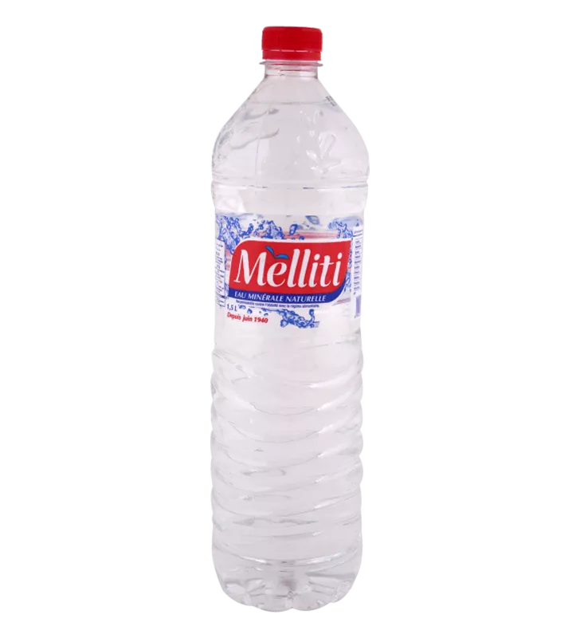

← Prix de toutes les eaux minérales en Tunisie

| Format | Prix bouteille par enseigne | Stika |
|---|---|---|
| 500 ml | Carrefour 0,400 DT · Géant 0,400 DT | 4,800 DT (×12) |
| 1.5 L | Géant 0,610 DT | 3,660 DT (×6) |
Prix relevés le 29/09/2026 sur les boutiques en ligne des grandes surfaces — indicatifs, ils peuvent varier selon le magasin. Stika = pack de 6 bouteilles (12 pour les 50 cl).
eau minérale naturelle — d'après les fiches de l'Office National du Thermalisme (source), en mg/L sauf pH.
| Résidu sec (TDS) mg/L | 422 |
| Calcium mg/L | 92.53 |
| Magnésium mg/L | 7.3 |
| Sodium mg/L | 30.24 |
| Potassium mg/L | 0.82 |
| Bicarbonates mg/L | 260.77 |
| Sulfates mg/L | 26.76 |
| Chlorures mg/L | 53.96 |
| Nitrates mg/L | 32.15 |
| Fluorures mg/L | 0.5 |
| pH | 7.0 |
Sur Prix des Eaux de Tunisie, ajoutez vos stikas Melliti au panier avec le bouton +, indiquez votre adresse et recevez votre eau à domicile — le prix total et les frais de livraison vous sont confirmés sur WhatsApp, paiement à la livraison.